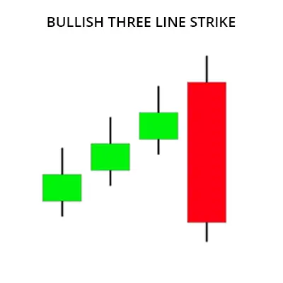

A bullish three-line strike pattern has several key elements that include: Three consecutive periods where the close is higher than the close the prior day. Three consecutive periods where the low is higher than the prior days low. Four consecutive periods where the high is higher than the prior days high.
| Bullish Three-Line Strike |
A bullish three-line strike is made up of four candles. Of these, the first three are bullish, while the last is bearish. It is made up of three strong bullish candles that progressively end higher followed by a final strike candle. The strike candlestick is bearish and begins at or higher than the third candle but closes at least lower than the open of the first candle. It has these qualities:

| Bullish Three Line Strike Example |
| Bullish Three Line Strike Trading Strategies |
Now that you have got a quick introduction to two powerful methods to increase the performance of most patterns, it’s time to move on to some example trading strategies that rely on the bullish three line strike.
And while the strategies below may not be ready to trade in their current shape, they are great examples of how you should go about when building your own trading strategies.
Trading Strategy 1: Bullish Three Line Strike and Range Condition
Exactly as with volume, the range sizes of the candles making up a pattern may be good indicators of its reliability. That is, if the range of a candle is big, it’s more significant.
As such, well combine the bullish three line strike with a range condition. We’ll require that the three bullish candles leading down to the last bearish candle of the pattern are formed with increasingly higher ranges. This ensures that bulls were strong before the last bearish candle appeared.
So, the rules become: